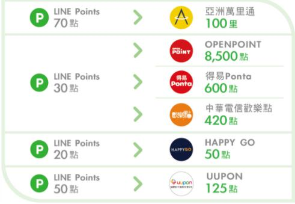

專屬優惠
#Hen利多 點數無上限
活動期間：107/1/1?107/12/31
■ 最高回饋LINE Points 2% 點數
一般消費尊享最高回饋LINE Points 2%點數回饋。
※ 所有消費回饋皆需綁定LINE Pay後生效，請儘速綁定。
■ 一卡通加碼 LINE Points 1% 點數
使用一卡通儲值金支付全台大眾交通(高鐵除外)消費，尊享LINE Points 1%點數回饋。
#Hen正點 兌點最多元
■ 即時折抵．1點抵1元
台北101、新光三越、威秀影城、漢神百貨、GlobalMall環球購物中心、秀泰影城、四大超商......串聯「LINE Pay」線上線下合計超過20,000家商店，消費即時折抵，實現您的想望，既使是高額點數，也可一次大梭哈。
■ 聰明兌點．效益大增值
Asia Miles、OPENPOINT、HAPPYGO、UUPON，聰明兌點 大增值、跨場域、展效期，誰說生活一成不變，讓LINE Points 陪您大玩「點數穿越劇」。

■ 超值兌換．天天有券戀
百貨、量販、美食、咖啡、電影各種面額購物金「即享券」，LINE Points 線上即時兌換，讓您一年365天天天有券戀。
■ LINE小舖．兌換好心情
． 貼圖小舖：超過40萬組貼圖，GO您貼！
． 主題小舖：超過5,000個主題，GO您挑！
． 禮品小舖：超過1,300件商品，GO您選！
． 愛心捐款：10餘個公益團體，GO您捐！
#Hen便利──綁定LINE Pay或申請電子帳單，尊享『免年費』禮遇
■ 首年免年費，再享成功綁定LINE Pay或申請本行電子帳單期間「免年費」禮遇
#Hen貼心──旅平險，尊享NT2000萬元保障
■ 刷卡支付 80%以上團費或全額機票，即可享有NT2,000萬元旅行平安險及旅行不便險權益
旅行平安險 班機延誤險
每一事故/家屬合計 行李延誤險
每一事故/家屬合計 行李遺失險
每一事故/家屬合計
2,000萬 1萬/2萬 1萬/2萬 3萬/6萬
以後就用LINE Pay來付款！
■ 在LINE的「其他」選擇「LINE Pay」綁定信用卡，即可用手機在LINE Pay實體商店或網路商家中消費。不需要攜帶錢包，就能輕鬆購物，享受一指瞬間，快意生活！
活動注意事項
一般消費，享LINE Points 2%點數回饋(請詳見『中國信託LINE Pay信用卡回饋計畫』)。
相關優惠回饋，均須以LINE Pay信用卡成功綁定LINE Pay方得享有。
LINE Points點數取得、回饋方式，悉依『中國信託LINE Pay信用卡回饋計畫』為準，詳參本行公告。
LINE Points點數回饋僅限綁定台灣帳號。
回饋效期至107/12/31止，其餘回饋活動細則請依本行公告為主，本行保留優惠內容變更之權利，並依相關規定辦理。
本產品無道路救援、機場外圍停車、機場貴賓室等附加功能。
中國信託LINE Pay信用卡回饋計畫
一般消費LINE Points 2%點數回饋活動資格：中國信託LINE Pay信用卡之正卡持卡人及附卡持卡人均可參加本活動，中國信託LINE Pay信用卡簽帳消費將不再累積紅利點數，亦不適用本行『刷卡得利計畫』、『中信紅利商店計畫』及現金回饋計劃等活動辦法，且繳付或消費以下項目，不予計算LINE Points點數積點：(1)信用卡年費、利息、預借現金、逾期還款違約金，以及依『中國信託信用卡約定條款』約定之其他各項手續費。(2)刷卡買基金、賭博籌碼或旅行支票之相關交易金額及費用。(3)繳學費、各項稅款、社區管理費、違規罰緩及政府規費。(4)分期靈活金、帳單分期、分期付款交易。(5) 儲值電子票證之自動儲值金。(6) eTag儲值與eTag智慧停車費用之扣繳。(7)代扣繳各項公用事業費用(包含台電、省水、市水、瓦斯、各縣市路邊停車費等)及中華電信各項電信費用。(8) 透過中信卡優惠、中信行動達人及網路銀行繳納各項公用事業費用及電信費。(9) 透過各繳費及支付平台，(包含但不限於有無繳納手續費之i繳費、醫指付APP、全國繳費網平台、電子化繳費稅處理平台、公務機關信用卡繳費平台等) 繳納之各項費用。(10)全聯福利中心消費。(11)便利商店(7-11、全家、萊爾富、OK超商)消費(12) 透過聯合信用卡處理中心小額支付平台之特約商店之消費(如便利超商、速食店、停車費等行業)。(13)透過 Pi行動錢包連結信用卡付款之各型態消費 (如於統一超商使用Pi行動錢包付款)。(14)特定行銷專案或其他經本行公告不回饋之項目。
LINE Points點數性質：LINE Points點數僅適用於本計畫範圍，LINE Points點數並不構成持卡人之資產，持卡人不得要求本行將累積之LINE Points點數折合現金、兌換成紅利點數或其它非本計劃所述之使用方式。
LINE Points點數回饋資格及計算方式：(1)持卡人於中國信託LINE Pay信用卡成功綁定LINE Pay期間之簽帳消費方適用LINE Points點數回饋計劃。(2)持卡人使用中國信託LINE Pay信用卡簽帳消費，LINE Points點數未足1點採四捨五入計算，例如：刷卡消費75元x2%=1.5點，四捨五入為2點，點數結算以每筆消費後約5個營業日撥入該聯名卡綁定之LINE會員帳戶(以商店實際請款作業時間為準)，如期間中國信託LINE Pay信用卡換補，視為同一卡號累計。(3)持卡人因任何原因或理由將刷卡消費買受之貨品或服務退還，或因刷卡爭議或其他原因而退還款項者(如退稅、退貨或帳務調整)，持卡人原先已取得之LINE Points點數，本行將逕依其退還款項金額，自中國信託LINE Pay信用卡綁定之LINE會員帳號積點比例予以扣除，此扣回點數範圍僅限持卡人LINE帳戶內由中國信託LINE Pay信用卡累積而來的點數，若持卡人LINE帳戶內之LINE Points點數不足或已全數兌換完畢，中國信託將以1點等同於1元之比例，將不足點數之約當金額，列示為信用卡帳單之應繳金額向持卡人收取。(4)若LINE Points點數回饋時點客戶已取消綁定中國信託LINE Pay信用卡、註銷LINE Pay帳號或註銷LINE會員帳號，將視同放棄無法取得LINE Points點數回饋資格，並無法取得LINE Points點數，事後不得要求中國信託補發或折換現金。 (5)LINE Pay點數回饋僅限台灣LINE帳號。
LINE Points點數有效期限：LINE Points點數自給點日起算效期180天，逾期未折抵完畢之點數將自動歸零失效，LINE Points點數之使用期限及方式，悉依LINE制定之規定，詳細內容依LINE官方公告為準。
LINE Points點數折抵：點數折抵採先進先出，實際使用可於LINE平台兌換貼圖或購買商品折抵，有關LINE Points點數使用規範及相關權利義務悉依LINE官方公告為準。
持卡人若有違反信用卡約定條款(包括但不限於偽冒、道德風險、虛假交易等)或本計畫之情事，中國信託有權暫停持卡人LINE Points點數回饋活動之資格並追回已回饋之LINE Points點數。
LINE Points點數及LINE Pay綁定的使用說明，請參見LINE官方網站line.me/zh-hant/查詢，若有任何變動依LINE公告為準，優惠適用範圍、服務詳情及使用方式，請參考本行網站www.ctbcbank.com說明，LINE及中國信託商業銀行保留變更、終止本活動之權利，亦得因法令、政府命令或其他非可歸責於中國信託之情事而暫停或終止本活動，相關事宜將依信用卡業務機構管理辦法第十九條及相關規定辦理。
中國信託LINE Pay信用卡回饋計畫優惠期間至107/12/31為止，交易日須於107/12/31前，信用卡請款入帳日須於108/1/31前，優惠內容若有變動以中國信託或LINE Pay最新公告為準。